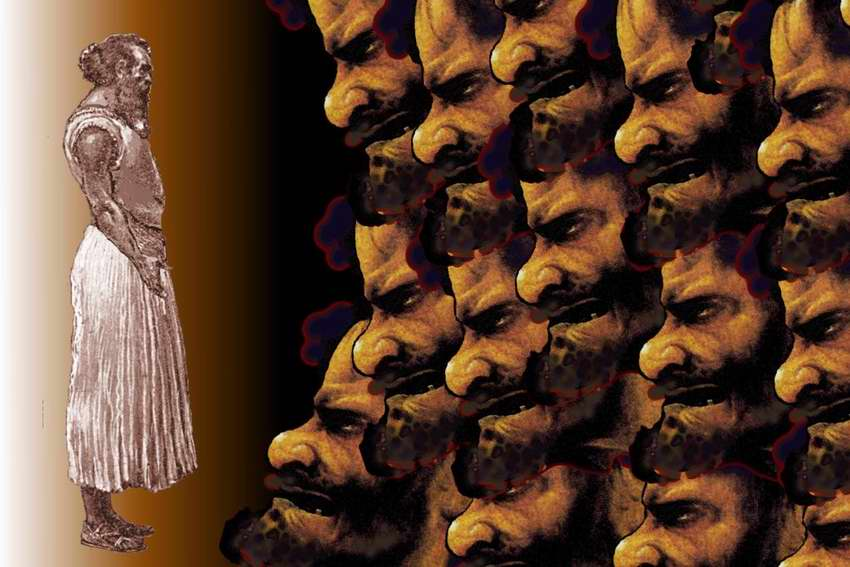
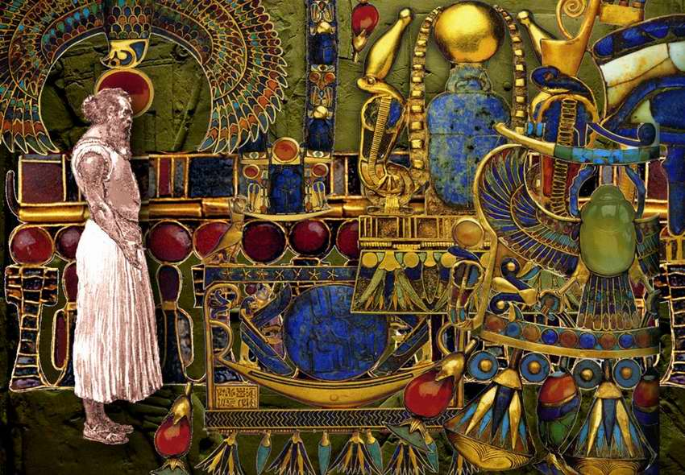

Призван быть ОЧИЩЕННЫМ. Бецалель
За каждым человеком, вне зависимости от имени, данного ему родителями, сохраняется свобода выбора, и свободная воля у него не не отнимается… Но то, как избирают поступить отцы, часто определяет будущее детей.

Обычное, на первый взгляд, родословие, которыми изобилует Тора… Если заметить, что и сама книга, которую мы читаем, в еврейской традиции называется «Шемот» (Имена), можно понять, что имена в нашем случае имеют определяющее значение.
Необычно здесь то, что Бог особо указывает Моше и всему Израилю на важность этого родословия (из семи раз при упоминании имени Бецалеля в Торе – четыре приведены с полным его родословием) и имён, составляющих его.
Две линии представлены в этом родословии:
1-ая линия несёт в себе послание, заключённое в пророческом смысле имён. Так что цепочка «расшифрованных» имён провозглашает волю Божью над Бецалелем. Вот как звучит его имя, если перевести значения имён с иврита:
ПРЕБЫВАЮЩИЙ ПОД ПОКРОВИТЕЛЬСТВОМ ВСЕВЫШНЕГО И В ТЕНИ ВСЕМОГУЩЕГО, СЫН СВЕТА ГОСПОДНЕГО, СЫН ЧИСТОТЫ, ИЗ РОДА ПРОСЛАВЛЯЮЩИХ БОГА.
2-ая линия – линия судеб конкретных людей …
За каждым человеком, вне зависимости от имени, данного ему родителями, сохраняется свобода выбора, и свободная воля у него не не отнимается…
Но то, как избирают поступить отцы, часто определяет будущее детей.

Имя Бецалеля встречается в Торе семь раз, подробно описываются способности, дарованные ему Богом, служение, к которому он был призван и всё, что он сделал своими руками по Божьему повелению.
Об Ури - отце Бецалеля наверняка нам неизвестно ничего, кроме того, что он был последнему отцом и сыном Хуру.
А вот Хур – дед Бецалеля, по всей вероятности, сыграл немалую роль в становлении Бецалеля как служителя Божьего. О нём Писание не даёт исчерпывающей информации, но та, что мы таки да, имеем, говорит о многом.
Впервые мы встречаем его в кн. Шемот 17:10-12:
Аарон и Хур восходят на вершину холма вместе с Моше и поддерживают его руки во время битвы с Амалеком.
Кто этот Хур? И почему он наравне с Аароном служит Моше? Как можно объяснить, что этот человек близок к Моше настолько, как близок его (Моше) родной брат?
Мидраш очень просто объясняет это обстоятельство:
Хур действительно был близким (хотя и не кровным) родственником. Он был мужем родной сестры Моше – Мириам. По свидетельству Иосифа Флавия, он был мужем Мариам, сестры Моисея (Иуд.Древ. кн.lll 2:4).

Второй раз мы читаем о нём, когда он и Аарон остаются за начальствующих в стане Израильтян на время, пока Моше взошёл на гору Синай (Шемот 24:14)…
Можно было бы подумать: неплохая карьера, он круто начал, этот дед Хур в свои 100 лет.
Но… если мы захотим вновь отыскать Хура по возвращении Моше, когда он в гневе своём на народ, поклонившийся золотому тельцу, разбивает скрижали… деда мы не найдём... Он исчезает со страниц Писания.
Что же случилось? Почему Моше, по возвращении, всё своё негодование обращает только на своего брата Аарона? Где Хур, ведь он остался наравне с Аароном.
И вновь нас выручает мидраш: оказывается, Хур не делал карьеры...
Он просто принял решение следовать за Богом и хранить Ему верность, и это стоило ему жизни.
Итак мидраш продолжает: когда Моше спустился с горы Синай, Хура уже не было… не было в живых…

Не сложно представить себе, как возбуждённая толпа, подгоняемая криками:
«А что его?!… Мы все стояли у горы! Разве ему одному говорил Господь? И где он? «Встань и сделай нам бога, который бы шел перед нами, ибо с этим человеком, с Моисеем, который вывел нас из земли Египетской, не знаем, что сделалось». (Шемот 32:1)).
Когда толпа окружает Аарона и требует, чтобы он сделал ей золотого тельца, рядом с Аароном Хура уже нет.
Согласно преданию, дед Бецалеля Хур был убит отступниками, поскольку не подчинился их требованию.
Именно к нему толпа обратилась в первую очередь. Ведь он был один из двух начальствующих, оставленных Моше и при том был человеком, знающим толк в обработке драгоценного металла.
Вероятно он был главой ремесленной династии.

Обученные искусству ещё во время правления в Египте Иосефа, некоторые израильтяне достигли в ювелирном деле больших высот. Искусство своё они передавали, как это было принято, из поколения в поколение, от отца – к сыну. Хур был отменным мастером. Возможно, немало египтян предпочитали его работу работе ремесленников – египтян. Он, как большой специалист в своём деле, пользовался большим почтением у израильтян, имея всё, что нужно иметь в этой жизни: почёт и уважение, деньги и славу, сына и внука, которым он передал великую свою драгоценность – умение выделывать уникальные вещи искусной работы.
И вот, судьба «посмеялась» над ним…:
«На третий день, при наступлении утра, были громы и молнии, и густое облако над горою, и трубный звук весьма сильный; и вострепетал весь народ, бывший в стане. И вывел Моисей народ из стана навстречу Богу, и стали у подошвы горы. Гора же Синай вся дымилась от того, что Господь сошел на нее в огне; и восходил от нее дым, как дым из печи, и вся гора сильно колебалась; и звук трубный становился сильнее и сильнее. Моисей говорил, и Бог отвечал ему голосом.» (Шемот 19:16-19).
Да, в шоке был весь народ, но слова Бога, обращенные как будто лично к нему, потрясли Хура:
«Не делай себе кумира и никакого изображения…» (Шемот 20:4)

Всё то, что до того момента было для него предметом гордости, смыслом жизни, источником преуспевания, то, что дало ему высокое положение и уважение в обществе – его способности, талант, всё это в один момент оказалось под строжайшим запретом.
То, чем он жил всю свою долгую жизнь и чему учился у своего отца и деда с великим терпением и упорством, – оказалось страшным грехом.
Какие чувства может переживать в такой момент человек, достигший преклонных лет, старец, который в одно мгновение потерял всё. Эти слова гремели в его ушах, и он не мог не думать, не искать ответа, будто ничего не произошло.
Там в Египте он слышал от своего деда о Боге отцов Авраама, Ицхака и Иак., но теперь он знал Его лично. И Он сам говорил к нему. Одно он решил твёрдо после мучительных борений:
«Я и мой дом будем служить Господу».
Собрав весь свой род: сына с его жёнами и детьми, внука Бецалеля, доставлявшего особенную его радость и надежду своим талантом и оригинальностью его работ, Хур объявил о своём решении: «Я не знаю, что будет со мною дальше, но в сердце своём я решил - последовать за Богом, чего бы мне это не стоило. Бог Израиля, не оставлявший милостью Своей отцов наших, теперь, когда Он Сам открылся мне лично, не оставит и меня.
И если Он сказал «нет» на моё искусство, то я со слезами на глазах, но и с радостью в сердце от того, что Сам Бог говорил мне, скажу Ему на это – амен, пусть так и будет».
Потрясение было общим чувством, захватившим семью в тот момент. И как это обычно бывает у евреев, мнения разделились.
Возможно сын – Ури избрал «рациональную», прагматичную, позицию: дескать, по шаббатам мы будем служить Господу, а шесть дней недели зарабатывать себе на пропитание своим ремеслом. Возможно он и был тем, кто исполнил по просьбе Аарона «срочный заказ» - золотого бычка…
ХУР: Раньше вся моя жизнь была посвящена искусству, я жил ради искусства и в вас видел продолжателей моего дела, тех, кто достигнет в искусстве высот, которые не покорились мне...
Но сейчас что-то изменилось в моём сердце, особенный свет откровения коснулся меня. Я понял, что есть неизмеримо большее чем искусство - Творец всего... И Он сам говорил со мной...

БЕЦАЛЕЛЬ: А я согласен с дедом. Я тоже почуствовал что-то произошло с моим сердцем, Просто я не мог сформулировать это. Да, да со мной тоже говорил Бог. Он говорил лично мне, как и деду
УРИ: Папа... Мы все стояли у горы и все слышали голос, но нельзя же воспринимать так буквально.
Да, слышали все, но Хур принял для себя решение и оно очень скоро подверглось испытанию, как переплавкой испытывают золото.
И тогда, когда толпа убивала его, не вопрос спасения занимал его разум, но
откровение о своём собственном имени. Моё имя – Хур – значит чистый. «Он очистил меня, это просто потрясающе... Творец вселенной от начала назвал меня чистым и Он сделал это, как огнём очищают золото. Он взвесил меня и нашёл тяжелым, как тяжело золото (кавед и кавод – один корень ивр.)
Старик сделал таки свою «карьеру» своей жизни – он совершил восхождение.
Внук же - Бецалель последовал в своём решении за дедом, вернее, за Богом Израиля.
Тогда он вопреки страху и неопределённости утвердился в своём решении и положил его глубоко в своём сердце: «Я последую Господу, как последовал за Ним мой дед, даже до самой смерти».
Это было страшным испытанием для юноши, ставшего свидетелем ужасной картины убийства собственного деда недовольной отказом Хура толпой.
Это было мучительным испытанием для Бецалеля – художника, полного творческих замыслов и перспектив, и, тем не менее, принявшего решение - оставить всё ради слова Бога Израилева.
Именно это решение, проверенное испытанием, - следовать за провозглашением, заключенным в его имени - «Бэ цель Эль» (в тени Бога), следовать за hа-Творцом, куда бы Тот ни призвал его,
именно это решение позволило Богу произнести перед лицом Моше и всего Израиля: «Смотри, Я призываю по имени Бецалеля, сына Ури, сына Хура, из колена Еhуда…».
ЕСЛИ ЭТОТ МАТЕРИАЛ БЫЛ ВАМ ПОЛЕЗЕН, ПОЖАЛУЙСТА, ПОДЕЛИТЕСЬ ИМ С ДРУЗЬЯМИ

Это самое решение сделало Бецалеля художником, призванного Создателем творить по Его воле и для Его славы.
30 И сказал Моисей сынам Израилевым: смотрите, Господь назначил именно Бецалеля, сына Ури, сына Хура, из рода Еhуда, 31 и исполнил его Духом Божиим в мудрости, разумении, ведении и всяком искусстве, (храм, мишкан, вселенная) 34 и способность учить других вложил в сердце его…; (Исх. 35:30-35)
см. также тему "Бецалель - Сын Света":
БЕЦАЛЕЛЬ - СЫН СВЕТА. Призвание. (часть I) БЕЦАЛЕЛЬ - СЫН СВЕТА. Под покровом Всевышнего. (часть II) БЕЦАЛЕЛЬ - СЫН СВЕТА. Свет Господень (часть III) БЕЦАЛЕЛЬ - СЫН СВЕТА. Дед ХУР (часть IV) БЕЦАЛЕЛЬ - СЫН СВЕТА. Славящий Бога (часть V)
***
Эта статья Эфраима Калиша исправлена и дополнена автором.
(впервые она была опубликована на сайте levit1144.ru)
автор: Эфраим Калиш /TORAART/